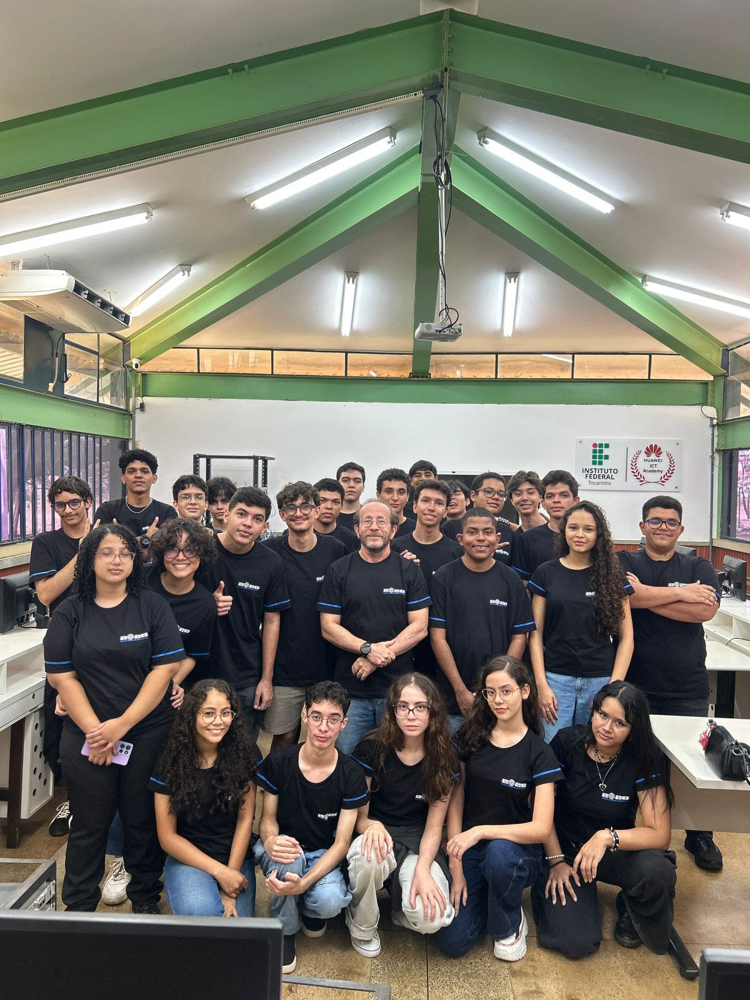

ENTEC
O Encontro dos Alunos dos Cursos Técnicos — é um evento idealizado, planejado e executado pelos próprios estudantes do 3º ano do Curso Técnico em Informática, integrando as turmas de 1º, 2º e 3º anos do IFTO.

Um evento criado por estudantes para estudantes
O ENTEC é um evento organizado pelos alunos do 3º ano do Curso Técnico em Informática para incentivar novas possibilidades de aprendizado tecnológico fora da grade curricular.
As três frentes do evento
Minicursos
Oficinas que ensinam habilidades necessárias para o mundo da informática e novas possibilidades para o uso da tecnologia.
-
Robótica com lego ao lado do professor Wendel
-
Minicurso de Design para Jogos - Técnicas e conceitos usados por desenvolvedores na produção de personagens
-
Press Start - Html, Css e JavaScript no desenvolvimento de jogos
Palestras
Conteúdos autorais e mediados sobre temas atuais de tecnologia, apresentados por alunos, professores e convidados externos.
-
-Apresentação do sistema Núcleo de Auxílio à Vida Acadêmica - Lucas da Silva Lemos, Pedro Arthur Batista Carvalho, Leandro Alguma coisa
-
-Palestra sobre inteligência artificial - Diego Castro Rodrigues
Atividades Interativas
Competições de jogos amados
-
KAHOOT!
-
Campeonato de FIFA
-
Campeonato de JUST DANCE
- Abertura / Palestras - 10/11
- Mini-Curso - 11/11
- Campeonato - 12/11